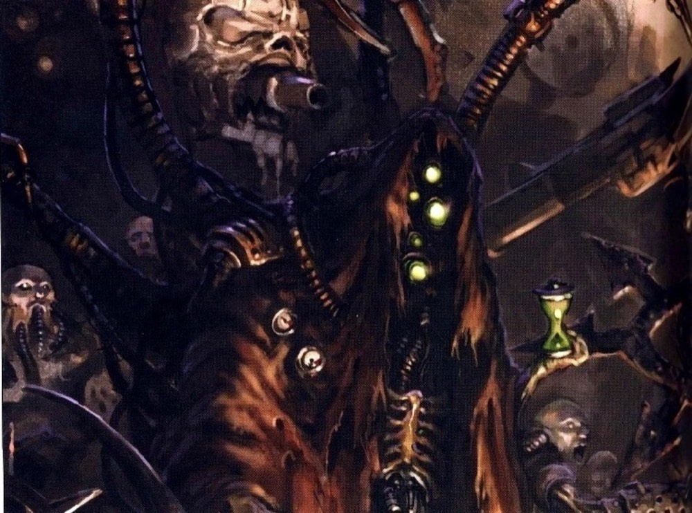

Dark Mechanicum
| Dark Mechanicum The Traitor Mechanicum | |
|---|---|
The Icon Mechanicus upon the star of Chaos, sigil of the Dark Mechanicum Artwork © Games Workshop | |
| Formed | 005.M31, in the Schism of Mars |
| Founder | Fabricator General Kelbor-Hal |
| Allegiance | Horus; afterwards Chaos |
| Belief | The Emperor is a false Omnissiah; knowledge from the Warp is lawful |
| Seats | Formerly the traitor forges of Mars; now the hell-forges of the Eye of Terror and the outlands |
| Military | Traitor Skitarii; daemon engines; traitor Titan Legions, among them the Legio Mortis |
| Allied with | The Traitor Legions; the Warpsmiths of the Iron Warriors; Vashtorr |
| Enemy | The Adeptus Mechanicus; the Imperium of Mankind |
The Dark Mechanicum, also called the Dark Mechanicus, is the faction of the priesthood of Mars that betrayed the Emperor of Mankind during the Horus Heresy, and the traitor tech-priests who have served Chaos since. It was born in 005.M31, when the Fabricator General Kelbor-Hal declared for the Warmaster Horus and set the forges of Mars against one another in the Schism of Mars. Its adherents hold that the Emperor is not the Omnissiah, and that no knowledge, including the knowledge of the Warp, should be forbidden to the seeker.[1][2]
Driven from Mars after the Heresy, the Dark Mechanicum found refuge with the Traitor Legions in the Eye of Terror, where its hell-forges have armed the forces of Chaos for ten thousand years. Its tech-priests, called hereteks by their former brethren, bind daemons into machines, build the daemon engines and Titans of the traitors, and pursue every art that the Adeptus Mechanicus forbids.[2][3]
No crime is more hated by the Adeptus Mechanicus than the treachery of the Dark Mechanicum. The devastation of Mars in the Schism, and the knowledge that the priesthood's own brethren carried it out, have left what Mechanicus scholars describe as a stain on the soul of the priesthood that has never been cleansed.[2]
History
[edit]Origins
[edit]The Treaty of Olympus had made the Mechanicum a partner of the Imperium, and recognised the Emperor as the Omnissiah. Not all of the priesthood accepted the doctrine. Some held that the Omnissiah had not yet come; others resented the Emperor's restrictions on their research, above all the sealing of the vaults beneath Mars, in which he had locked away knowledge and devices that he judged too dangerous. The Mechanicum supplied the Great Crusade with weapons and machines on a vast scale, and its leaders felt that the promise of an equal partnership had never been kept.[1][2]
Kelbor-Hal, who had become Fabricator General in the two centuries after the Treaty, was the chief of the discontented. At the outbreak of the Heresy, Horus sent to Mars a magos named Regulus, who had already joined him. Regulus offered Kelbor-Hal a prize of ancient technology, the removal of all limits on Mechanicum research, the restoration of Mars to its former glory and the withdrawal of non-Mechanicum forces from the forge worlds after the Emperor's fall. Kelbor-Hal accepted.[1]
The Schism of Mars
[edit]To give himself a pretext for war, Kelbor-Hal opened the vaults that the Emperor had sealed and loosed upon Mars a scrapcode, a corrupting machine-plague that crippled the planet's systems. Those forges that refused to follow him, led by Koriel Zeth and Ipluvien Maximal and by the Fabricator-Locum Zagreus Kane, were branded hereteks and attacked. The Schism that followed set forge against forge and Titan Legion against Titan Legion; the Legio Mortis fought for the traitors and the Legio Tempestus for the loyalists. The traitors used virus bombs on Zeth's forge-city and killed fourteen million people in minutes. Its course is described in the article Schism of Mars.[1]
Kelbor-Hal also built warships for Horus in secret, among them the battleship Furious Abyss, built in the shipyards of Jupiter, which he destroyed with all their workers when the ship was finished.[1]
The Horus Heresy
[edit]
For the rest of the Heresy, the Dark Mechanicum armed Horus's forces. Traitor forge worlds produced weapons and war machines, and the Legio Mortis and other traitor Titan Legions marched with the Warmaster's armies. The Dark Mechanicum took part in the Drop Site Massacre on Isstvan V and in the Siege of Terra, and much of Mars remained in its hands until after the Siege. In this period its tech-priests began to experiment with the powers of the Warp, binding daemons into machines and drawing on the knowledge that the Ruinous Powers offered.[1]
After the Siege and the Great Scouring, the loyalists retook Mars, and the surviving Dark Mechanicum fled with the Traitor Legions into the Eye of Terror and to the edges of Imperial space. Zagreus Kane became Fabricator General of the reconstituted Adeptus Mechanicus, and took a seat among the High Lords of Terra.[1][2]
After the Heresy
[edit]Within the Eye of Terror the Dark Mechanicum built its hell-forges: forge worlds ruled by daemonic overlords, where the machines of Chaos are made and daemons bound into them. They have produced the weapons of every Black Crusade. The Mechanicus attributes to them some of the most terrible weapons of the traitors, including the psycho-sonic weapons of the Emperor's Children, the techno-virus that creates the Obliterators, and assistance to the experiments of Fabius Bile.[2][3]
Not all hereteks are servants of Chaos. Beyond the Eye of Terror, in the outlands of the Halo Stars and other regions of wilderness space, tech-priests who have fled the discipline of Mars practise their forbidden arts for their own ends. Some form clans that keep knowledge within their families. The Mechanicus hunts all of them with the same hatred, and those who are caught are tortured and executed by the Inquisition.[3]
Era Indomitus
[edit]The opening of the Great Rift spread the reach of the Dark Mechanicum far beyond the Eye. Hereteks have taken forge worlds cut off in the Imperium Nihilus, turned their populations to the making of daemon engines, and spread scrapcode through the noosphere of loyal worlds. During the Arks of Omen, the daemon Vashtorr the Arkifane, called the God in the Machine, built the daemonic Arks that carried the forces of Abaddon the Despoiler across the Imperium Nihilus, and many hereteks served him as a patron of the forge. The Adeptus Mechanicus regards Vashtorr's rise as the most serious threat from the traitor priesthood since the Schism.[4]
Beliefs
[edit]The Dark Mechanicum shares the old goal of the Cult Mechanicus, the Quest for Knowledge, but rejects its limits. Its tech-priests hold that the Emperor was a false prophet who led the priesthood astray, and many came to see the Omnissiah as embodied in the power of Chaos Undivided itself. In their view, the loyal Mechanicus will never comprehend the divinity of knowledge while it refuses the secrets that the Dark Gods offer. They regard their former brethren as fools, while the loyalists are horrified by what they see as the blasphemy of the Dark Mechanicum, and yet are always curious to learn what their dark brethren have discovered.[2]
Arts and forces
[edit]
The defining art of the Dark Mechanicum is the binding of daemons into machinery. Its daemon engines, from walking siege engines to traitor Titans, are machines inhabited by daemonic spirits, which serve with a fury that no machine spirit can match. Its tech-priests also practise forbidden forms of genetic manipulation, the use of xenos technology, the creation of thinking machines, and the weapons of scrapcode and techno-virus that can corrupt Imperial machines and the minds of their crews.[2][3]
Its armies include traitor Skitarii, descended from the forces that turned in the Schism or made since, cybernetic monstrosities, servitors and heretek cults. The Iron Warriors and their Warpsmiths, who practise similar arts, have long been its closest allies among the Traitor Legions. Its traitor Titan Legions, the Legio Mortis foremost among them, have fought in every great war of Chaos since the Heresy.[2]
Relations with the Adeptus Mechanicus
[edit]The Adeptus Mechanicus treats the Dark Mechanicum as its oldest and most hated enemy. Mechanicus forces have destroyed heretek forges, purged scrapcode from their own noosphere and hunted hereteks across the galaxy. Yet the history of the Schism remains a sensitive matter on Mars, where the priesthood's own complicity in the Heresy is rarely discussed. The Inquisition's Ordo Machinum watches the Mechanicus for signs of the same heresy returning, and accusations of tech-heresy have been made against forge worlds and senior magi, including, in the Era Indomitus, Archmagos Belisarius Cawl.[3][4]
Timeline
[edit]| Date | Event |
|---|---|
| 739.M30 | The Treaty of Olympus binds Mars to the Imperium and seals forbidden research. |
| After 739.M30 | Kelbor-Hal rises to be Fabricator-General over two Terran centuries. |
| 005.M31 | Kelbor-Hal declares for Horus and begins the Schism of Mars; the Dark Mechanicum is born. |
| 006.M31 | Traitor Titans of Legio Mortis fight at the Drop Site Massacre. |
| 007.M31 | The Furious Abyss, built in secret at Jupiter, is destroyed by the Ultramarines. |
| 012.M31 | The loyalists are recognised as the Adeptus Mechanicus under Zagreus Kane. |
| 014.M31 | The Dark Mechanicum fights in the Solar War and the Siege of Terra. |
| After the Siege | The hereteks are driven from Mars into the Eye of Terror during the Great Scouring. |
| 781.M31 onward | Hell-forges arm the Black Crusades. |
| After 999.M41 | After the Great Rift, hereteks seize forge worlds in the Imperium Nihilus; the Arks of Omen campaign. |
See also
[edit]References
[edit]- ^ a b c d e f g Haley, Guy. Genefather (novel). Black Library, Chs. 9, 20, 28. McNeill, Graham. The Chapter's Due (novel). Black Library.
- ^ a b c d e f g h i Haley, Guy. Titandeath (novel). Black Library, Chs. 5-6, 9. Abnett, Dan. Know No Fear (novel). Black Library.
- ^ a b c d e McNeill, Graham. Fulgrim (novel). Black Library. McNeill, Graham. Mechanicum (novel). Black Library.
- ^ a b Counter, Ben. Battle for the Abyss (novel). Black Library. Abnett, Dan. First and Only (novel). Black Library.